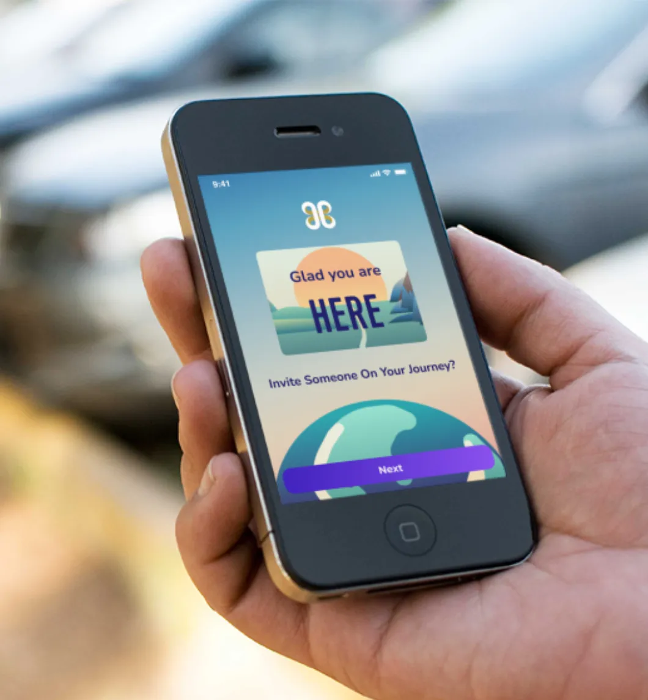
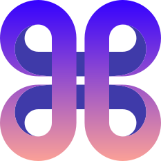
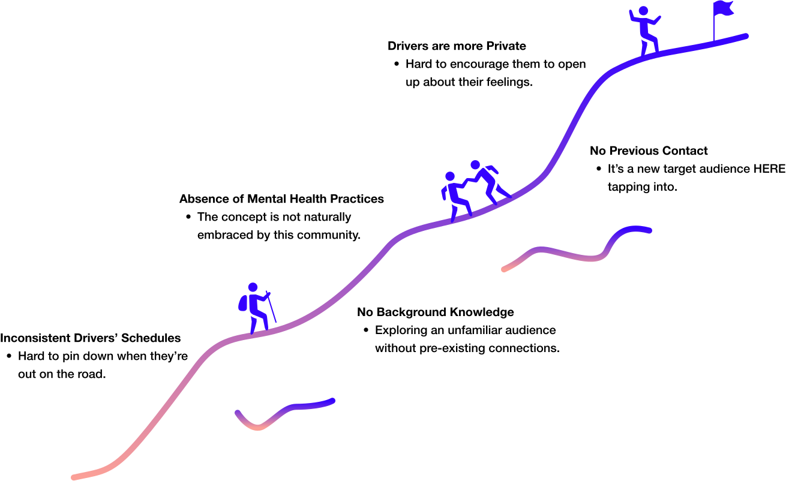
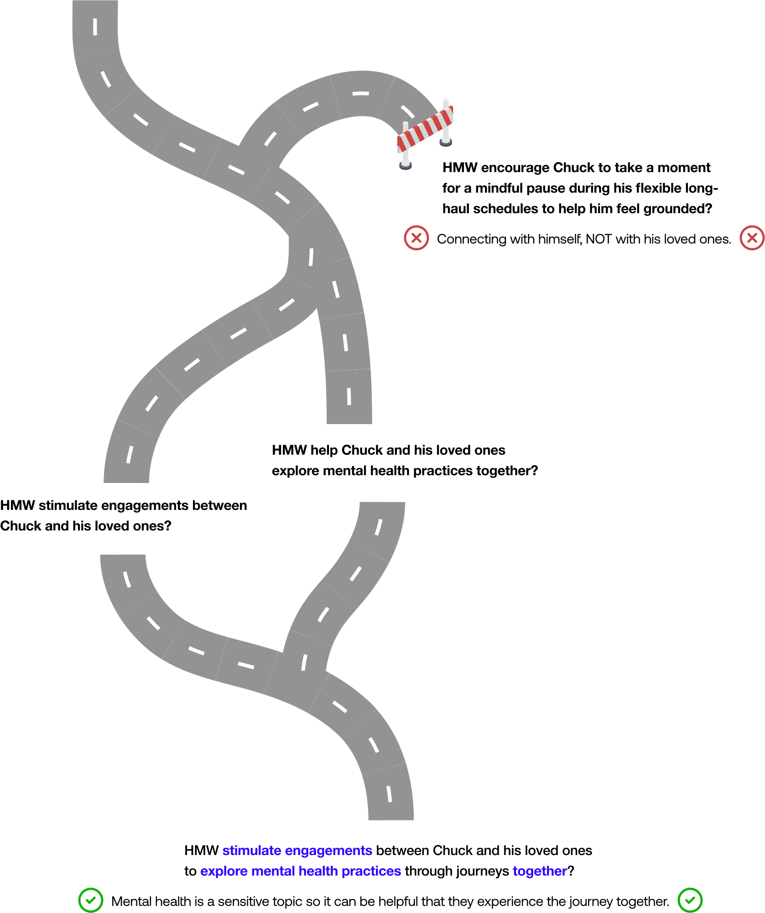
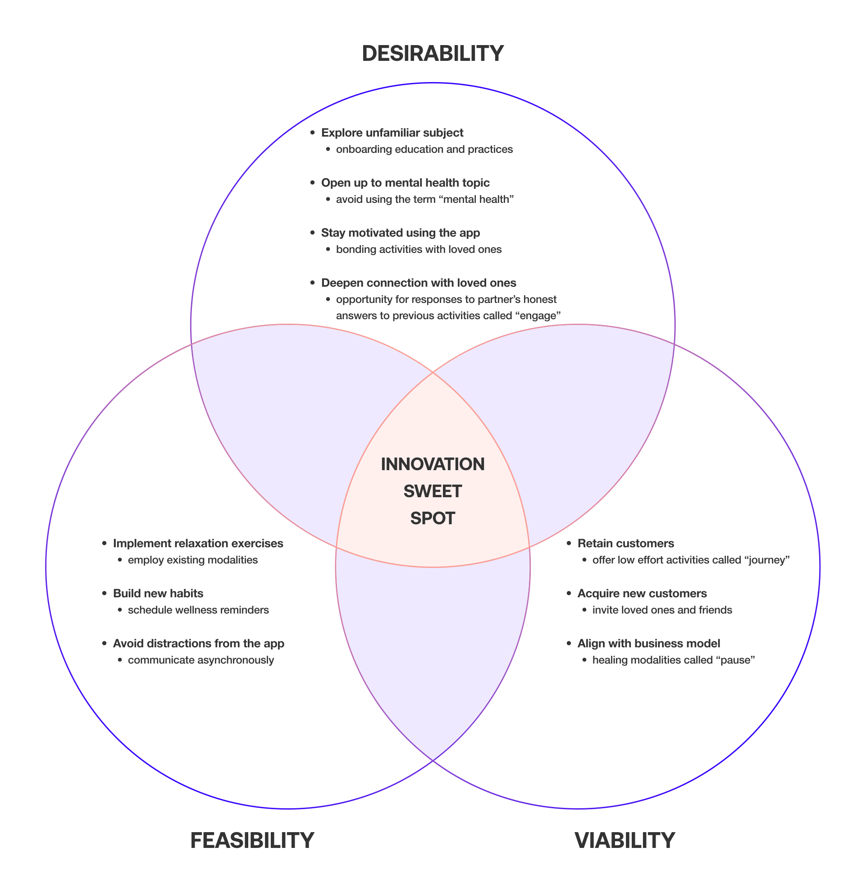
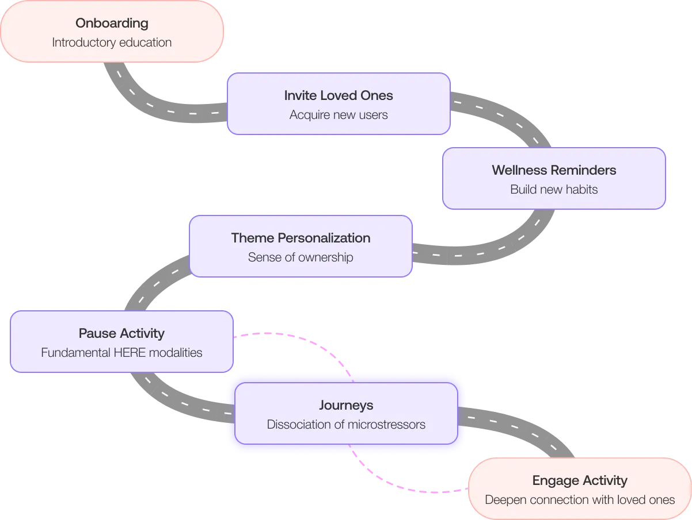
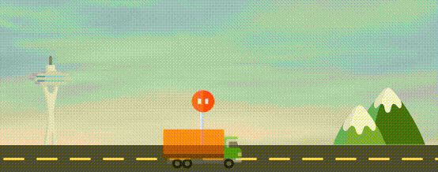
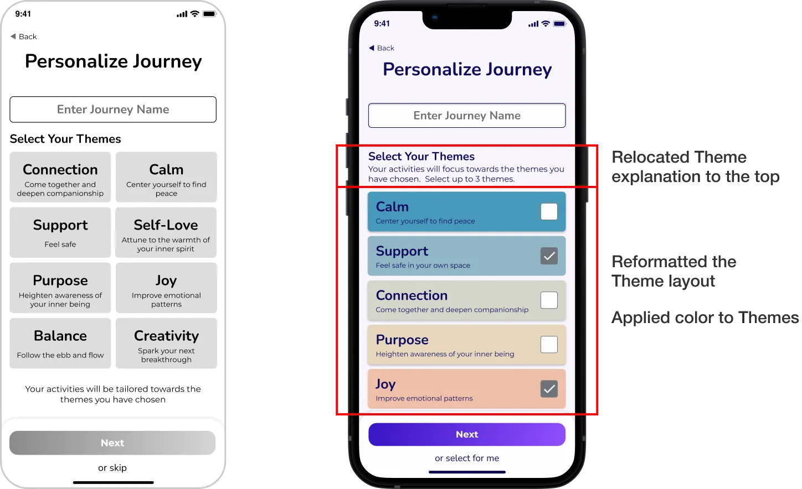
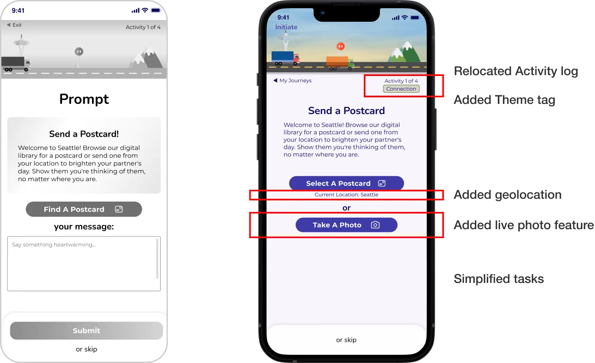
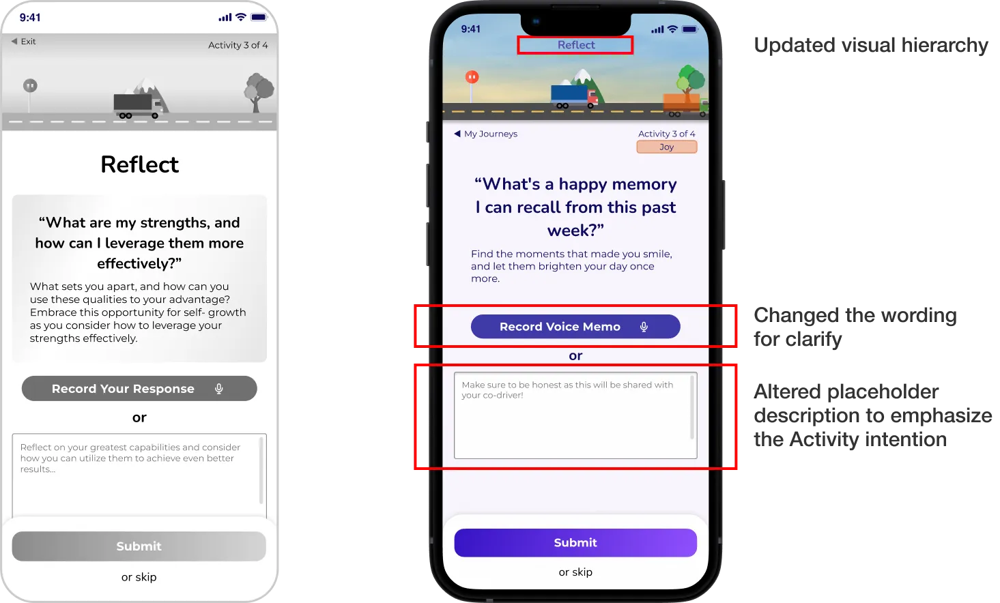

Research & Interaction UX Design Co-Lead, 2nd Point of Contact
Myself and 3 other UX designers, 3 weeks
User interviews, Affinity Mapping, Competitive & Comparative (C&C) Analysis, Journey Mapping, Persona, Sketching, Wireframing, Prototyping, Usability Testing, Co-workshop Facilitation, Presentation
Figma, Illustrator, Notion, Google Workspace, Zoom, Slack
HERE is a social enterprise that combines neuroscience insights with healing modalities to provide interactive relaxation exercises. Their platform is tailored for corporate wellness programs.

Over-the-Road (OTR) Truck drivers face unique challenges in maintaining their well-being due to their demanding schedules and limited access to traditional wellness programs.
HERE is partnering with TrueNorth, a leading US benefits company for the transport industry, to develop a new and innovative solution that caters specifically to the needs and preferences of this hard-to-reach demographic.
The current app may not resonate with truck drivers, our team has the chance to design a new digital interactive experience that functions as a form of digital therapy to relieve stress and anxiety while on the road.



Our research on OTR truck drivers, who spend significant time away from home, revealed a crucial challenge: they rely heavily on family and loved ones for support during long trips.
When faced with microstressors, they often choose to temporarily alleviate them by setting them aside and taking deep breaths.
Combining the persona pain points and desired outcome along with the journey map touchpoints and existing actions taken, it gives us a more holistic view of our problem.



The pivotal solution in solving our problem occurs within the Journey.
Journey encompasses of 4 activities:

This prototype involves the following phases:



Based on the test findings, the majority of users preferred completing a journey with a co-driver. Therefore, this hi-fi prototype will focus on group journeys rather than solo ones.
This prototype involves the following phases:
While we would love to solve all the problems, due to the limited time we have for this sprint, we have to allocate some tasks for future steps.
Here's a list of items that will need attention for the next iteration:
Working with Client:
It's important to revisit project plan together at regular intervals. This not only allows transparency of the project expectations and progress, it builds trust between each other s well. While keeping open-minded, we also had to be assertive and know when to protect the scope of the project based on the research we've conducted.
Be Adaptative:
This project highlighted the crucial role of adaptability and creative problem solving skills. While leveraging available resources is essential, unexpected challenges may arise. By embracing a flexible mindset and thinking outside the box, we successfully overcame the hurdle of user sourcing, demonstrating the value of this approach in achieving project goals.
Priority and Reiteration:
Sometimes, project deadlines mean we have to let go of a few things, but that's just part of the process. However, this is where the value of reiteration comes into play. Revisiting and refining the project continuously allows for ongoing improvement.
Bridging the Gap Between Research and Design:
As the co-lead for Research & Interaction, a key aspect of my role involves ensuring a seamless connection between research findings and design decisions, especially crucial during synthesis.
During the project, I noticed the team veering towards product ideation and functionality, potentially overlooking our core goal: enhancing engagement for our persona and their loved ones. By steering our efforts back to the central problem and goal, we developed a design solution that effectively meets user needs while aligning with our broader objectives. This experience highlighted the importance of maintaining focus on our goals to achieve impactful outcomes.
Figma Prototyping Skills:
I took charge of developing the Journey stages, some of which required more intensive animation efforts. Despite the tight deadline and the challenges it posed, I delved into extensive research to overcome them. While it was initially daunting, the effort was rewarding as it allowed me to refine my skills in prototyping.